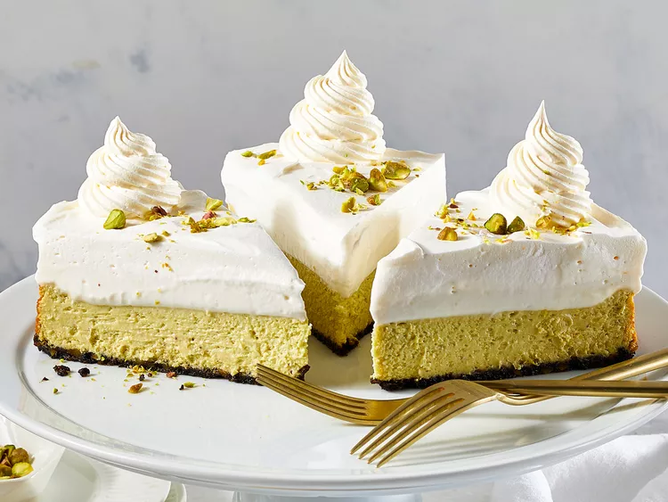

Chocolate Pistachio Cheesecake

Description:
A Chocolate Pistachio Cheesecake is a decadent, multi-textured dessert that combines nutty richness with silky sweetness. Popularized by the viral Dubai Chocolate craze, it often features a crunchy Oreo or knafeh (kataifi) base, a luscious cream cheese and pistachio paste filling, and a glossy dark chocolate ganache topping.
Visually, this cheesecake is a showstopper, drawing immediate attention with its vibrant, contrasting layers. The deep, dark hues of the chocolate base and top ganache frame a striking, pale-green pistachio center, making it a highly photogenic centerpiece for any dessert table. When sliced, it reveals its distinct, clean-cut sections, inviting you to experience the perfect marriage of rich, velvety creaminess and dramatic, crispy texture in every single bite.
Ingredients:
- 3 ounces chocolate wafer cookies
- ¾ cup raw unsalted pistachios, divided, plus more for garnish
- 2 tablespoons granulated sugar
- 2 (8 ounce) packages reduced-fat cream cheese (Neufchâtel), softened
- 1 avocado, peeled, seeded, and mashed until smooth (1/2 cup)
- 2 cups fat-free plain Greek-style yogurt
- 2 tablespoons cornstarch
- ¾ cup granulated sugar
- 2 large egg whites
- 1 teaspoon almond extract
- ⅛ teaspoon salt
- ¼ cup whipping cream
- 2 tablespoons powdered sugar
- 1 teaspoon vanilla extract
- 1 (16 ounce) container frozen nondairy low-fat whipped topping, thawed, plus more for garnish
Instructions:
- Preheat the oven to 325 degrees F (165 degrees C). Coat a 9-inch springform pan with cooking spray.
- In a food processor, pulse cookies, 1/4 cup pistachios, and 2 tablespoons sugar until mostly finely ground. (It's OK to leave some texture.) Add melted butter; pulse to combine. Spread mixture evenly in the prepared pan and press firmly into bottom of pan.
- For pistachio butter, blend remaining 1/2 cup pistachios in a small food processor until very smooth and slightly loose consistency, about 5 minutes. Transfer pistachio butter to a large bowl; add cream cheese, avocado, 1 cup yogurt, cornstarch, and 3/4 cup white sugar. Beat with an electric mixer at medium speed just until mixture is nearly smooth. Add egg whites, almond extract, and a pinch of salt; beat until just combined. Spread over prepared crust.
- Bake until surface near edges appears set when gently wiggled, about 40 minutes. Turn off oven. Let cheesecake stand in oven 30 minutes. Cool in pan on wire rack 15 minutes. Using a thin metal spatula, loosen cheesecake from sides of pan. Cool completely.
- For mousse, beat whipping cream, powdered sugar, vanilla, remaining 1 cup yogurt and a pinch salt in a bowl with an electric mixer at medium-low speed until fluffy, about 4 minutes. Spread over cheesecake.
- Spread whipped topping over mousse. Chill, covered, at least 4 hours or up to 5 days. To serve, remove from pan, slice, and garnish with additional whipped topping and pistachios.
Homepage